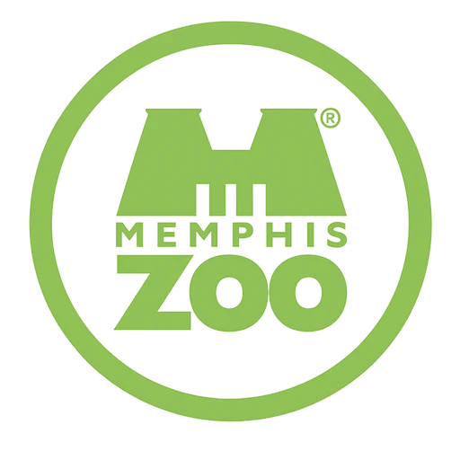

Dashboard Map
Checking manager access…
Dashboard cleaning status
Map cleaning status unavailable until a current authenticated response
Choose a pin or location for details.

Checking manager access…